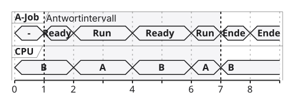

07 · Was geschieht wann?
Tracing und Timing-Analyse auf dem STM32H755
Eine Messfrage stellen, passende Ereignisse erfassen
Zeitgrößen berechnen und Beobachtereffekte erkennen
Papiermodelle und ein lokaler Zykluszählerversuch
Dieser Termin untersucht das Verhalten des Systems aus Vorlesung 6. Tracing bedeutet eine geordnete Aufzeichnung ausgewählter Ereignisse. Timing-Analyse untersucht, welche Zeiten zwischen definierten Ereignissen liegen und ob sie die Anforderungen erfüllen. Beide beginnen mit einer Frage, nicht mit einem Gerätefenster. Auf dem NUCLEO-H755ZI-Q betrachten wir weiterhin den Cortex-M7 mit Bare-Metal-Programm, also ohne Kernel, und den Cortex-M4 mit FreeRTOS, dem Echtzeitbetriebssystem.
Ein Messwert beantwortet nur die Frage, für die Anfang, Ende und Zeitquelle festgelegt wurden. Ein erfolgreicher Datenaustausch ist beispielsweise noch kein Nachweis seiner Abschlussfrist. Die Vorlesung führt deshalb zuerst einen Messvertrag und die bekannten Jobgrößen ein. Anschließend betrachten wir den lokalen Zykluszähler und die Hardwarequellen für längere Ereignishistorien. Die Pflichtübung benötigt keine BlueBox. BlueBox ist eine Familie externer Debug- und Tracegeräte; ihre Analyseumgebung winIDEA wird als zusätzlicher Weg eingeordnet. Modellzahlen bleiben von tatsächlichen Boardbeobachtungen getrennt.
Vorlesungen 1–6 sind die gemeinsame Grundlage
Job, Antwortzeit, Deadline
Welche Ereignisse begrenzen die Messung?
Ready, Running, Blocked
Läuft wirklich Taskcode?
Mutex und Queue
Was verändert ein zusätzliches Log?
Shared Memory, Cache, MPU
Welchen Zugriffsweg sehen wir?
Ein Job ist eine konkrete Aktivierung einer Task. Die Antwortzeit reicht von ihrer Freigabe bis zum geforderten Abschluss; die Deadline ist die zugehörige Frist. Ready bedeutet ausführungsbereit, Running laufend und Blocked auf eine Bedingung wartend. Ein Mutex ist eine Sperre mit Besitzer, eine Queue eine begrenzte Nachrichtenwarteschlange. Shared Memory bezeichnet gemeinsam erreichbaren Speicher. Die MPU, Memory Protection Unit oder Speicherschutzeinheit, beschreibt Rechte und Attribute eines Kerns; ein Cache hält lokale Kopien.
Diese Kenntnisse genügen für den Einstieg. Neu sind die Messdefinition, der Zykluszähler und die Tracequellen. Das Ping-Pong aus Vorlesung 6 liefert einen Datenvertrag mit den Antworten eins, drei und fünf. Heute fragen wir zusätzlich, welche Beobachtung diese Antworten oder ihre Zeiten tatsächlich belegt. Ein M7-Schreibereignis beweist beispielsweise noch nicht den vom M4 gelesenen Wert. Auch eine Taskliste beweist nicht jede frühere Zustandsänderung. Die folgenden Lernziele ordnen die neuen Verfahren nach ihrer Aussage.
Am Ende begründen Sie eine Messung
Anfang, Ende, Einheit und Bedingungen festlegen
Eigene Rechenzeit, Antwortzeit und Latenzen unterscheiden
Lokale Zähler mit Takt und Umlaufgrenze verwenden
ITM, DWT, ETM und Debugzugriff unterscheiden
Gültige Traceabschnitte und ihre Grenzen erkennen
Eine Messung braucht zuerst ihre beiden Ereignisgrenzen und die Zeitbasis, also die Quelle und Skalierung ihrer Zeitwerte. Eigene Rechenzeit beschreibt die tatsächlich dem Job zugeordnete Prozessorarbeit. Antwortzeit umfasst auch Wartephasen. Latenz bezeichnet eine Verzögerung zwischen jeweils ausdrücklich benannten Ereignissen. Ein lokaler Zähler gehört zu einem Kern und ist keine automatisch gemeinsame Uhr.
ITM bedeutet Instrumentation Trace Macrocell und nimmt unter anderem Softwaremarkierungen entgegen. DWT bedeutet Data Watchpoint and Trace und liefert konfigurierte Kernereignisse sowie den lokalen Zykluszähler. ETM bedeutet Embedded Trace Macrocell und unterstützt die Rekonstruktion des Kontrollflusses. Diese Namen werden später mit ihren jeweiligen Grenzen erklärt. Ein Debugzugriff liest dagegen eine momentane Sicht, nicht automatisch eine Ereignishistorie. Das Ziel ist eine begründete Auswahl: Für ein kurzes lokales Arbeitsintervall genügt häufig ein Zähler. Für Taskzustände braucht man zusätzliche Kernelinformationen. Für einen Inter-Core-Abstand braucht man bestätigte Zeitkorrelation. Die Übung überprüft diese Entscheidungen an Rechenfällen und einem vollständigen Anwendungsmodul.
Vier Schulstunden: rechnen, messen, auswerten
1 · Messfrage und Zeitgrößen
30 Erklärung + 15 Papier 1–2
2 · Zähler und Beobachter
25 Erklärung + 20 Papier 3
3 · Trace und Datenqualität
25 Erklärung + 15 Papier 4 + 5 Projektprüfung
4 · Versuch und Rückblick
25 Versuch + 15 Quiz + 5 Abschluss
Vier Schulstunden entsprechen hier 180 Unterrichtsminuten. Die Tabelle umfasst achtzig Minuten Erklärung, fünfzig Minuten Papierarbeit, dreißig Minuten Projektprüfung und Versuch sowie zwanzig Minuten Quiz und Abschluss. Die fünfzig Folien sind unterschiedlich lange Arbeitsstationen. Eine Rechenfolie oder ein Diagramm bleibt länger sichtbar als eine kurze Orientierung.
Die Lehrperson stellt die erprobte Dual-Core-Projektbasis aus den vorherigen Terminen bereit. Dual Core bezeichnet zwei Prozessorkerne. Installation, erstmaliger Flashstart und Reparatur der Takt- oder Linkerdateien sind Vorbereitung, nicht zusätzliche Inhalte der dreißig Minuten. CubeMX konfiguriert die Firmware; VS Code mit der STM32 VS Code Extension baut und untersucht die beiden Ziele. Der lokale Zählerversuch läuft auf dem M7 und setzt keine besondere Traceprobe voraus. Papieraufgaben bleiben ohne Hardware vollständig lösbar. Die zusätzliche Auswertung mit BlueBox und winIDEA, also externem Recorder und Analyseumgebung, wird nur mit bestätigtem Gerät und Aufnahmepfad durchgeführt.
Der Messvertrag kommt vor dem Werkzeug
Anfang / Ende
Zählerlesen vor / nach dem Arbeitsabschnitt
Quelle / Einheit
M7-CYCCNT, Kerntakte
Bedingungen
gleicher Build, stabiler Takt, kein Halt
Enthalten
Arbeit, Barrieren, laufende Unterbrechungen
Ausgeschlossen
späteres Speichern und Anzeigen des Logs
Ein Messvertrag legt fest, welche zwei Ereignisse eine Zahl begrenzen und unter welchen Bedingungen sie interpretiert wird. CYCCNT bedeutet Cycle Count, Zykluszählstand, im DWT-Baustein Data Watchpoint and Trace. M7 bezeichnet den Cortex-M7. Ein Build ist ein bestimmter übersetzter Programmstand. Eine Barriere ordnet beziehungsweise vervollständigt bestimmte Prozessorzugriffe.
Das Beispiel misst ein lokales Arbeitsintervall zwischen zwei Zählerlesungen. Es enthält auch die innerhalb liegenden Barrieren und Unterbrechungen, solange der Zähler weiterläuft. Das spätere Speichern in den Logpuffer liegt außerhalb. Damit ist die Zahl weder automatisch reine Rechenzeit der Funktion noch Antwortzeit eines Jobs ab Freigabe. Ein anderes Werkzeug kann andere Ereignisgrenzen sehen: Ein Logpaket kommt später beim Host an; ein GPIO-Messgerät sieht physische Pinflanken. GPIO bedeutet General-Purpose Input/Output, allgemeiner Ein- und Ausgang. Beide sind eigene Messverträge. Die folgenden Beobachtereffekte erklären, warum das Einfügen einer Marke selbst den gemessenen Ablauf beeinflussen kann.
Beobachtung kann Zeit und Reihenfolge verändern
Zusätzliche Befehle und Logs kosten Arbeit
Ausgabe und Sperren können Wartezeiten erzeugen
Ein anderes Layout verändert Cache und Speicherwege
Ein Debughalt verändert den Fortschritt anderer Teilnehmer
Ein voller Tracepuffer kann Daten verlieren
Ein Beobachtereffekt ist eine Veränderung des Systems durch das Verfahren, mit dem man es beobachtet. Ein Log ist eine gespeicherte Ereignisnotiz. Ein Cache ist ein lokaler Zwischenspeicher. Ein Tracepuffer speichert eine begrenzte Menge aufgezeichneter Ereignisse. Die Aussage beschreibt konkrete Software- und Hardwaremechanismen, kein allgemeines physikalisches Gesetz für jede Messung.
Ein zusätzlicher Funktionsaufruf kann einen knappen Job verlängern. Eine Ausgabe kann einen Mutex erwerben oder auf Pufferplatz warten und dadurch die Reihenfolge konkurrierender Tasks ändern. Veränderte Codeadressen können andere Cachezeilen benutzen. Ein angehaltener Kern lässt unter Umständen die Gegenstelle weiterlaufen. Ein verlustbehafteter Trace lässt wiederum einen Teil der tatsächlichen Ereignisse unsichtbar werden. Diese Fälle haben verschiedene Ursachen. Man reduziert den Einfluss durch kurze definierte Marken, begrenzte Puffer und Ausgabe nach dem Messfenster, prüft ihn aber weiterhin. Eine Beobachtung ohne zusätzliche Anwendungsbefehle kann ein Vorteil sein; sie beseitigt nicht die Anforderungen an Datenqualität und Zeitquelle.
„Hallo“: Leitungszeit vollständig nachrechnen
Lehrannahme: fünf ASCII-Bytes, kein Zeilenumbruch, UART 8N1.
\[N_{Bit}=5\cdot(1+8+1)=50\]
\[t_{Leitung}=\frac{50}{115200}\,\mathrm{s}\approx434\,\text{µs}\]
Das ist die Leitungsdauer, noch keine CPU-Zeit von printf.
UART bedeutet Universal Asynchronous Receiver/Transmitter, asynchrone serielle Sende- und Empfangsschnittstelle. ASCII ist eine Zeichenkodierung; die fünf Zeichen von Hallo sind hier fünf Bytes. 8N1 bedeutet acht Datenbits, keine Parität und ein Stopbit. Zusammen mit dem Startbit ergeben sich zehn Leitungsbits je Byte. Der Nullterminator einer C-Zeichenkette wird in diesem Lehrfall nicht übertragen, ebenso kein Zeilenumbruch.
N Bit bezeichnet die Bitzahl, t Leitung die reine Übertragungsdauer. Fünf mal zehn sind fünfzig Bits. Geteilt durch 115200 Bits je Sekunde sind das 0,0004340278 Sekunden oder etwa 434 Mikrosekunden. µs bedeutet Mikrosekunden. CPU, Central Processing Unit oder Prozessor, bezeichnet eine andere Ressource. printf ist die formatierende C-Ausgabefunktion. Wie lange sie den Prozessor bindet oder blockiert, hängt von Formatierung, Treiber, Sperren und Ausgabeweg ab. Die Rechnung ist eine didaktische Leitungsannahme, keine Boardmessung und kein allgemeiner Worst Case jeder Ausgabe. Die nächste Folie trennt die möglichen Prozessorbelegungen.
Gleiche UART-Leitung, verschiedene CPU-Belegung
Polling
CPU wartet aktiv auf den Sender
Interrupt
Treiberarbeit bei Sendeereignissen
DMA
Start und Abschluss, Hardware überträgt
Lehrfall: 10 µs Arbeit + 434 µs blockierende Ausgabe ≈ 444 µs.
Eine Deadline von 50 µs wird in diesem Modell verletzt.
UART ist die Universal Asynchronous Receiver/Transmitter-Schnittstelle, eine serielle Leitung. CPU bedeutet Central Processing Unit, Prozessor. DMA bedeutet Direct Memory Access, direkten Hardware-Speicherzugriff. Polling ist wiederholtes Prüfen einer Bedingung durch das Programm. Eine Interruptausgabe nutzt Behandler für Sendeereignisse; eine DMA-Ausgabe lässt Hardware den vorbereiteten Puffer übertragen.
Alle drei Wege können dieselbe Leitungszeit haben, während ihre Prozessorbelegung verschieden ist. DMA macht Formatierung, Pufferlebensdauer und Abschlussbehandlung nicht kostenlos. Auch ein interruptgesteuerter Treiber kann die aufrufende Task auf freien Platz warten lassen. Im ausdrücklich vereinfachten Lehrfall blockiert die Ausgabe den kritischen Ablauf für die volle Leitungsdauer. Zehn Mikrosekunden Arbeit plus etwa 434 Mikrosekunden Ausgabe ergeben etwa 444 Mikrosekunden. Gegen eine angenommene Deadline von fünfzig Mikrosekunden ist das zu spät. Eine Fristverletzung ist ein verpasster Abschluss, kein zwangsläufiger Absturz. Die Ausgabe gehört daher nach das zeitkritische Messfenster oder braucht einen passenden begrenzten Vertrag.
Ein Breakpoint hält einen Kern an
Gegenstelle, DMA und Peripherie können weiterlaufen
Freeze hängt vom passenden DBGMCU-Register ab
Ein Pending-Bit zählt nicht unbegrenzt viele Flanken
Begrenzte Puffer können während des Halts überlaufen
Resume stellt verlorene Ereignisse nicht wieder her
Ein Breakpoint ist ein Haltepunkt im Debugger; Resume setzt die Ausführung fort. DMA bedeutet Direct Memory Access, direkten Hardware-Speicherzugriff. DBGMCU bezeichnet den STM32-Debug-Unterstützungsblock. Freeze bedeutet das konfigurierbare Einfrieren bestimmter Peripheriefunktionen. Pending bedeutet eine noch anstehende Interruptanforderung.
Wenn der M7 an einem Haltepunkt steht, kann der M4 weiterarbeiten. Ein Timer kann ebenfalls weiterlaufen, sofern seine Freeze-Konfiguration ihn nicht anhält. Welche Komponenten betroffen sind, wird am Projekt geprüft. Ein Pending-Bit zeigt, dass eine Anforderung anliegt; es ist keine unbegrenzte Liste aller eingetroffenen Flanken. Eine Peripherie kann zusätzliche Zähler oder begrenzte FIFOs besitzen. FIFO bedeutet First In, First Out, Reihenfolge nach Eingang. Deren tatsächliche Kapazität entscheidet über erhaltene Daten. Viele externe Flanken erzeugen während des Halts nicht automatisch viele verschachtelte Behandler-Stackframes. Nach Resume bleibt nur das rekonstruierbar, was noch gespeichert ist. Ein Datenlauf unter solchen Halten belegt deshalb keinen unveränderten Echtzeitablauf.
Ein verschwundener Fehler ist noch keine Diagnose
Heisenbug: Beobachtung verändert das Auftreten eines Fehlers.
Race
verändert die Reihenfolge ungeschützter Zugriffe
Prioritätsinversion
verändert Besitz- und Verdrängungszeiten
Cachefehler
verändert Layout oder Cacheverdrängung
Erst eine begründete Hypothese macht daraus eine Diagnose.
Heisenbug bezeichnet einen Fehler, dessen beobachtetes Auftreten sich durch Debugging oder Instrumentierung verändert. Eine Race ist eine unerlaubt verschränkte Zugriffsfolge ohne gültigen Schutzvertrag. Prioritätsinversion bedeutet, dass eine hohe Aufgabe auf eine Ressource einer niedrigeren wartet und weitere Arbeit den Besitzer verzögern kann. Ein Cache hält lokale Speicherzeilen; deren Verdrängung kann geänderte Daten später sichtbar machen.
Die Mechanismen bleiben getrennt. Ein Log kann zwei Schreibzugriffe auseinanderziehen und eine Race verdecken. Es kann einen niedrigen Mutexbesitzer länger oder kürzer laufen lassen und dadurch eine Inversion verändern. Es kann zusätzliche Speicherzugriffe erzeugen und eine Dirty-Zeile, also eine lokal veränderte Zeile, zurückschreiben lassen. Dass der Fehler mit dem Debugger verschwindet, beweist keine dieser Ursachen. Die Diagnose vergleicht gezielt Bedingungen und erfasst die dazu passende Spur. Für den Cachefall bleiben Adresse, Besitz und effektive Attribute aus Vorlesung 6 zuerst zu prüfen. Der nächste Messweg bietet kurze Marken, aber auch diese brauchen einen ausdrücklich definierten Endpunkt.
GPIO zeigt physische Pinflanken
Messfenster: steigende bis fallende Flanke am geprüften Pin.
Setzen und Rücksetzen sind zusätzliche Anwendungsarbeit
Interrupts zwischen den Marken gehören zum Intervall
Bus, Pad und Messgerät beeinflussen die beobachtete Kante
Pinbesitz und gemeinsames Register bleiben zu prüfen
Das ist keine automatische Store-zu-Store-Messung
GPIO bedeutet General-Purpose Input/Output, allgemeiner Ein- und Ausgang. Ein Store ist ein Prozessor-Schreibzugriff. Das Pad ist der physische Anschluss mit seinen elektrischen Eigenschaften. Ein Messgerät sieht die physische Flanke am Pin und nicht unmittelbar den internen Storezeitpunkt. Auflösung bezeichnet die kleinste unterscheidbare Zeitstufe des Geräts.
Das Programm setzt vor der Arbeit einen ausgewählten Pin und setzt ihn danach zurück. Zwischen beiden Flanken können Interrupts oder andere Verdrängungen liegen; diese gehören zur beobachteten Pulsbreite. Auch der Weg zum GPIO-Register und zum Pad beeinflusst die Kante. Ein direkter BSRR-Zugriff, Bit Set/Reset Register, kann einen Pin ohne Read-Modify-Write des Ausgaberegisters ändern. Er löst aber nicht jeden gemeinsamen Konfigurationskonflikt. Wie in Vorlesung 6 wird die Portzuständigkeit vorher geprüft. Für die Pflichtübung verwenden wir den lokalen Zähler, sodass kein unbestätigter Messpin erforderlich ist. Eine zusätzliche GPIO-Messung bleibt ein gesonderter, am Board eingerichteter Messvertrag.
Wählen Sie die Quelle zur Frage
Wie breit ist ein physischer Puls?
GPIO und Messgerät
Wie viele Kerntakte liegen zwischen zwei Lesungen?
lokaler CYCCNT
Welche Ereignisse wurden ausgeführt?
begrenztes Softwarelog / ITM
Welche Task lief und wann?
Trace plus Kernelzuordnung
Welchen Kontrollfluss nahm der Kern?
passender ETM-Pfad
GPIO bedeutet General-Purpose Input/Output, allgemeiner Ein- und Ausgang. CYCCNT ist der lokale Cycle Count, Zykluszählstand. ITM bedeutet Instrumentation Trace Macrocell und nimmt unter anderem Softwareereignisse auf. ETM bedeutet Embedded Trace Macrocell und unterstützt die Rekonstruktion des Kontrollflusses. Ein Kernel verwaltet die Tasks und ihre Zustände.
Die Tabelle ordnet Verfahren nach der gewünschten Aussage. Ein GPIO-Puls eignet sich für ein physisches Intervall. Ein Zykluszähler erfasst ein lokales Zeitfenster in Kerntakten. Ein Softwarelog oder ITM-Marker liefert ausgewählte Ereignisse, aber keine beliebige Vergangenheit. Die Darstellung einer Task benötigt Informationen über Kernelobjekte und Ausführungskontexte. ETM betrachtet wiederum den Maschinenkontrollfluss eines Kerns. Keine dieser Quellen ist automatisch die beste für jede Frage. Auch innerhalb derselben Quelle entscheidet die Grenze: Funktionsbeginn bis Rückkehr ist etwas anderes als Jobfreigabe bis Fertigstellung. Bevor wir die Tracearchitektur betrachten, rechnen wir deshalb die bereits bekannten Jobgrößen mit vollständigen Ereignissen nach.
Ein Job hat vier getrennte Zeitmarken
\(r\) Freigabe
\(s\) Beginn eigener Ausführung
\(f\) geforderter Abschluss
\(d=r+D\) absolute Deadline
\[R=f-r,\qquad\text{Slack}=d-f\]
Ein Job ist eine konkrete Aktivierung einer Task. r bezeichnet die Freigabe, s den Beginn ihrer eigenen Ausführung, f den geforderten Abschluss. D ist die relative Deadline, also das erlaubte Zeitbudget ab Freigabe. d gleich r plus D bezeichnet die absolute Frist. R gleich f minus r ist die Antwortzeit. Slack gleich d minus f bedeutet verbleibendes Abschlussbudget; ein negativer Wert verletzt diese Frist.
Die Einheiten müssen innerhalb einer Rechnung übereinstimmen, beispielsweise Millisekunden für alle Marken. Der Start s liegt möglicherweise nach der Freigabe r. Später kann der Job nochmals verdrängt werden. Seine Antwortzeit enthält diese Wartephasen, seine eigene Prozessorzeit nicht. Die Grenze f ist eine Anforderung: Eine Nachricht zu senden ist beispielsweise ein anderer Abschluss als eine physische Reaktion am Ausgang. Eine Task kann nach f weiterleben und später einen neuen Job bearbeiten. Ein Running-Profil allein enthält Freigabe und Deadline nicht automatisch. Dafür werden passende Ereignisse zusätzlich definiert. Das folgende Lehrdiagramm macht diese Unterschiede konkret.
Ein Job wird bereit, läuft und wird verdrängt
Synthetisches Ein-Kern-Modell in ms; Kontextwechselkosten hier null.

Die Abbildung ist ein synthetisches Schedulingmodell, keine Traceaufnahme. Scheduling bedeutet die Auswahl der laufenden Aufgabe. CPU ist die Central Processing Unit, der Prozessor. Ready bedeutet ausführungsbereit, Running laufend. Die obere Spur zeigt die Phase des Jobs A, die untere die Prozessorzuordnung. Run ist Running, also laufend; B bezeichnet hier fremde Arbeit und der Strich den noch nicht freigegebenen Job. Die waagerechte Achse zählt Millisekunden. Der hervorgehobene Bereich reicht von Freigabe eins bis Abschluss sieben; die Deadline liegt bei acht.
A wird bei einer Millisekunde bereit und startet bei zwei. Von zwei bis vier läuft A für zwei Millisekunden. Von vier bis sechs erledigt der Prozessor fremde Arbeit; A bleibt bereit und wird verdrängt. Von sechs bis sieben arbeitet A noch eine Millisekunde und ist anschließend fertig. Ende bezeichnet den Abschluss dieses Jobs, nicht das Löschen seiner Task. Kontextwechselkosten sind hier ausdrücklich null gesetzt. Das reale System hätte zusätzliche Kosten oder bereits darin enthaltene Intervalle. Die Darstellung ermöglicht deshalb eine genaue Modellrechnung, behauptet aber keine gemessene Umschaltzeit des STM32. Auf der nächsten Folie werden dieselben Kanten zu drei verschiedenen Größen zusammengesetzt.
Drei Größen aus derselben Spur
Lehrspur: \(r=1\) , \(s=2\) , \(f=7\) , \(d=8\) ms.
\[C_{eigene}=(4-2)+(7-6)=3\,\mathrm{ms}\]
\[R=7-1=6\,\mathrm{ms},\quad\text{Slack}=8-7=1\,\mathrm{ms}\]
Anfangswarten 1 + Verdrängung 2 + eigene Arbeit 3 = Antwortzeit 6 ms.
C eigene bezeichnet die dem Modelljob zugeordnete Prozessorarbeit, nicht bereits eine allgemeine Worst-Case-Schranke. r ist Freigabe, s erster Start, f Abschluss und d die absolute Deadline. R ist die Antwortzeit, Slack das verbleibende Abschlussbudget. ms bedeutet Millisekunden. Alle Zahlen stammen aus der synthetischen Spur der vorherigen Folie; Kontextwechselkosten sind dort null.
Die eigene Arbeit liegt in zwei disjunkten Running-Abschnitten: vier minus zwei gleich zwei und sieben minus sechs gleich eins. Zusammen sind das drei Millisekunden. Die Antwortzeit beginnt bereits bei Freigabe eins und endet bei sieben, also sechs Millisekunden. Bis zur Deadline acht bleibt eine Millisekunde. Zur Kontrolle erhält man dieselben sechs aus einer Millisekunde Anfangswarten, zwei Millisekunden Verdrängung und drei Millisekunden Arbeit. Fremde Prozessorarbeit gehört nicht zur eigenen Arbeit von A. Der gemessene Funktionsabstand von zwei bis sieben wäre nochmals eine andere Größe und enthielte Verdrängung. Papieraufgabe 2 prüft genau diese Abgrenzung.
Eine Lücke darf nicht als laufende Zeit zählen
A läuft 2–4 und 6–7 ms, vollständig
3 ms eigene Arbeit
Abschnitt 4–6 ms fehlt
dort ist die Zuordnung unbekannt
Freigabe fehlt
Antwortzeit nicht vollständig bestimmbar
neuer Abschnitt nach bestätigter Sync
getrennt auswertbar
Eine Gerade über eine Lücke wäre eine erfundene Historie.
Sync steht für Synchronisation der Traceaufnahme und ihrer Dekodierung. Eine Traceaufnahme ist eine geordnete Ereignishistorie einer ausgewählten Quelle. Die Zuordnung eines Intervalls zu Task A setzt gültige Grenzen und den Ausführungskontext voraus. ms sind Millisekunden. Die Tabelle verwendet die vorherige Lehrspur, verändert aber ihre Vollständigkeit.
Wenn beide Running-Abschnitte vollständig bekannt sind, beträgt die eigene Arbeit drei Millisekunden. Fehlt dagegen ein Abschnitt, weiß man dort nicht, welche Aufgabe oder Exception lief. Eine grafisch durchgezogene Linie ersetzt dieses Wissen nicht. Fehlt die Freigabe, kann man eventuell einen Funktionsabstand bestimmen, aber keine vollständige Jobantwortzeit ab r. Nach bestätigter neuer Synchronisation und Kontextzuordnung kann ein späterer Abschnitt separat gültig sein. Man muss nicht zwangsläufig jede spätere Aufnahme verwerfen. Die Lücke selbst bleibt dennoch unbekannt und wird aus Summen über vollständige Jobs ausgeschlossen. Diese Regel ist unabhängig davon, ob der Verlust im Zielpuffer, im Transport oder bei der Dekodierung entstanden ist.
Flanke, ISR und Veröffentlichung sind verschiedene Marken
Lehrspur mit gemeinsamer Modelluhr. Spuren von oben: Ereignis, ISR-Marker, Publikation.
ISR bedeutet Interrupt Service Routine, Interruptbehandler. Die Abbildung zeigt synthetische digitale Markersignale, keine Aufnahme des Boards. HIGH und LOW sind die beiden Signalpegel. Die waagerechte Achse beginnt bei 99 Mikrosekunden, jeder Schritt entspricht einer Mikrosekunde, µs. Die Ereignisflanke liegt bei 100, der ISR-Marker steigt bei 106 und fällt bei 115. Der Publikationsmarker steigt bei 110 und fällt im nächsten Schritt.
Die Signalnamen stehen für die gewählten physischen Beobachtungsmarken. Die steigende ISR-Marke definiert in diesem Modell den Eintritt, die fallende den Austritt. Die Veröffentlichung liegt somit innerhalb des genau neun Mikrosekunden langen ISR-Intervalls von 106 bis 115. Die Eintrittsverzögerung beträgt sechs Mikrosekunden ab Flanke 100. Ein wirklicher GPIO-Marker, General-Purpose Input/Output, hätte eigene Kosten und einen Weg zum Pin; diese Lehrspur abstrahiert davon. Taskbereitstellung, Taskstart und Reaktion kommen als weitere Marken hinzu. Die vollständige Tabelle der nächsten Folie verhindert, dass überlappende Abschnitte fälschlich addiert werden.
Die Interruptkette ohne doppelte Zeitanteile
Flanke / ISR-Eintritt
100 / 106
Veröffentlichung / Task Ready
110 / 111
ISR-Ende / Taskstart
115 / 120
geforderte Reaktion
128
Eintritt 6 · ISR-Intervall 9 · Ready-Warten 9 · Gesamtreaktion 28 µs.
Disjunkte Summe: 6 + 4 + 1 + 9 + 8 = 28 µs.
ISR bedeutet Interrupt Service Routine, Interruptbehandler. Ready heißt ausführungsbereit. µs sind Mikrosekunden. Alle Marken gehören zu derselben synthetischen Zeitbasis, nicht zu unterschiedlichen unkorrelierten Uhren. Die Eintrittsverzögerung ist 106 minus 100 gleich sechs. Das ISR-Intervall ist 115 minus 106 gleich neun. Ready bis Taskstart ist 120 minus 111 ebenfalls neun. Die Gesamtreaktion ist 128 minus 100 gleich achtundzwanzig Mikrosekunden.
Diese vier Kennzahlen darf man nicht gemeinsam aufsummieren. Das Ready-Warten von 111 bis 120 überlappt den noch laufenden ISR-Abschnitt bis 115. Eine disjunkte Zerlegung benutzt dagegen Flanke bis Eintritt sechs, Eintritt bis Veröffentlichung vier, Veröffentlichung bis Ready eins, Ready bis Start neun und Start bis Reaktion acht. Zusammen ergeben sie achtundzwanzig. Die volle ISR-Dauer kommt nicht nochmals hinzu. Der Taskstart bei 120 ist außerdem noch nicht die Reaktion bei 128. Ein Kontextwechselanteil müsste mit eigenen passenden Kanten eingeordnet werden. Ein synthetischer einzelner Verlauf ist keine obere Schranke jeder Interruptantwort.
Kerntakte werden erst mit dem Takt zu Zeit
Lehrfrequenzen, keine bestätigte Boardkonfiguration:
\[t=\frac{\Delta c}{f_{Kern}}\]
1000 Takte
400 MHz
2,5 µs
1000 Takte
200 MHz
5 µs
Takte sind keine Instruktionszahl; tatsächlichen Clock-Tree prüfen.
Delta c bezeichnet die Zählerdifferenz in Kerntakten, f Kern die bestätigte Kernfrequenz in Takten je Sekunde. t ist das daraus berechnete Intervall in Sekunden. MHz bedeutet Megahertz, Millionen Takte je Sekunde; µs sind Mikrosekunden. Der Clock-Tree beschreibt die tatsächliche Taktkonfiguration mit Quellen und Teilern.
Tausend geteilt durch vierhundert Millionen ergeben 0,0000025 Sekunden, also 2,5 Mikrosekunden. Bei zweihundert Millionen ergeben dieselben tausend Takte fünf Mikrosekunden. Beide Frequenzen sind didaktische Rechenannahmen, keine Einstellung des Laborboards. Der Cortex-M7 und der Cortex-M4 können verschiedene Frequenzen und lokale Zähler haben. Auch auf einem Kern bedeutet ein Takt nicht zwangsläufig eine vollständig abgearbeitete Instruktion: Pipeline, Speicher und Mehrzyklusoperationen verändern die Zuordnung. Für eine Zeitaussage müssen Frequenz und Zählerlauf während des ganzen Intervalls passen. Eine Frequenzanzeige im Hostprogramm allein liefert diese Bedingungen nicht. Die nächste Folie erklärt, weshalb zwei Kerne damit noch keine gemeinsame Uhr besitzen.
Zwei lokale Zähler sind noch keine gemeinsame Uhr
Unterschiedliche Startwerte und Rücksetzungen sind möglich
Kernfrequenzen können verschieden sein
Halt und Sleep können den Zählerlauf verändern
Zwei getrennte Aufnahmen belegen keine Inter-Core-Differenz
Gemeinsame Zeitbasis oder bestätigte Korrelation erforderlich
Inter Core bedeutet zwischen Prozessorkernen. Korrelation ist eine bestätigte Beziehung ihrer Zeitmarken, beispielsweise durch eine gemeinsame Aufnahmeuhr und zugeordnete Ereignisse. Sleep bezeichnet einen Energiesparzustand, Halt den Debughalt. Ein lokaler Zykluszähler zählt die dafür vorgesehenen Kerntakte und ist keine automatisch synchronisierte Systemzeit.
Selbst zwei gleichzeitig angezeigte Werte sind nicht direkt subtrahierbar. Ihr Nullpunkt kann verschieden sein; sie können mit unterschiedlichen Frequenzen laufen oder in bestimmten Zuständen stehen bleiben. Erst eine gemeinsame Skalierung und ein bestätigter Bezug der Nullpunkte erlauben eine Inter-Core-Zeitaussage. Zwei getrennte Traceaufnahmen sind noch keine solche Korrelation. Für ein kurzes M7-Fenster verwendet die Pflichtübung deshalb ausschließlich denselben M7-Zähler für Anfang und Ende. Sie misst weder eine Einweglatenz vom M7 zum M4 noch automatisch einen vollständigen Ping-Pong-Roundtrip. Ein gleichzeitig korrelierter Trace beider Kerne ist ein zusätzlicher, am tatsächlichen Gerät bestätigter Aufnahmeweg. Zuvor muss auch der endliche Zahlenbereich eines lokalen Zählers berücksichtigt werden.
32 Bit: ein Umlauf ist endlich
Lehrbeispiel:
uint32_t before = 0xFFFFFFF0 u ; uint32_t after = 0x00000030 u ; uint32_t delta = after - before; /* 64 modulo 2^32 */ \[T_{Umlauf}=\frac{2^{32}}{400\cdot10^6}\,\mathrm{s}\approx10{,}7374\,\mathrm{s}\]
Die Zeitumrechnung gilt nur für ein Intervall kürzer als einen Umlauf.
uint32_t ist ein vorzeichenloser 32-Bit-C-Typ. before und after sind zwei Stände desselben lokalen Zählers; delta ist ihre Differenz. Vorzeichenlose Rechnung erfolgt modulo zwei hoch zweiunddreißig. Die Startmarke liegt sechzehn Takte vor dem Zahlenende, die Endmarke achtundvierzig danach. Die Differenz ist deshalb vierundsechzig, obwohl der zweite Zahlenwert kleiner aussieht.
T Umlauf ist die Zeit einer vollständigen Zählerperiode. Zwei hoch zweiunddreißig sind 4294967296 Takte. Bei der hypothetischen stabilen Frequenz von vierhundert Millionen Takten je Sekunde sind das etwa 10,73741824 Sekunden. Die vierundsechzig Takte entsprechen dann 0,16 Mikrosekunden. Die Differenz allein kann nicht erkennen, ob zusätzlich ein vollständiger Umlauf oder mehrere vergangen sind. Ein längeres unbekanntes Intervall hat denselben Restwert. Das Programm muss daher eine bekannte kürzere Beobachtungsdauer und fortlaufende Zeitbasis voraussetzen. Bei Debughalt, Sleep oder Taktwechsel entfällt diese einfache Zeitdeutung. Die Referenz benennt das Feld ausdrücklich als Modulo-Differenz.
CYCCNT zählt ein Intervall, nicht nur die Funktion
DWT-CYCCNT ist der lokale Zykluszähler
Interruptarbeit innerhalb des Fensters kann mitgezählt werden
Fremde Taskausführung kann bei fortlaufendem Zähler mitgezählt werden
Halt, Sleep und Taktwechsel benötigen eine andere Bewertung
Reine Job-CPU-Zeit braucht gültige Ausführungszuordnung
DWT bedeutet Data Watchpoint and Trace. CYCCNT bedeutet Cycle Count, Zykluszählstand. CPU ist die Central Processing Unit, der Prozessor. Ein Job ist eine konkrete Taskaktivierung. Sleep bezeichnet einen Energiesparzustand. Die Folie trennt die verstrichenen gezählten Takte eines Fensters von der ausschließlich dem Job zugeordneten Arbeit.
Angenommen, eine Funktion beginnt vor einem Interrupt und kehrt erst nach dessen Behandler zurück. Wenn der Zähler währenddessen läuft, liegt die Behandlerzeit zwischen beiden Lesungen. Auf einem Kernelkern kann außerdem eine andere Task innerhalb des Fensters ausgeführt werden. Die Zählerdifferenz ist dann keine reine Funktions-CPU-Zeit. Für diese Größe müssen gültige Running-Abschnitte der richtigen Task zusammengezählt und Exceptions getrennt zugeordnet werden. Im Labor läuft das Zählermodul auf dem Bare-Metal-M7, aber auch dort können Interrupts das Fenster verlängern. Der M4 kann zusätzlich gemeinsame Ressourcen belasten. Die Auswertung nennt deshalb Messfenster, Last und Bedingungen. Sie deaktiviert nicht ungeprüft Interrupts, um aus einer anderen Ausführung scheinbar die ursprüngliche Zeit zu machen.
Den Zähler aktivieren und seinen Lauf prüfen
CM7-Referenz: Lab07_Init(SystemCoreClock).
tatsächliche Kernfrequenz zuerst bestätigen und aktualisieren
TRCENA und CYCCNTENA setzen, Unterstützung prüfen
M7-Softwarelock bei Bedarf lösen
zwei Lesungen mit begrenzter NOP-Probe vergleichen
Zähler nicht auf null setzen; Zuständigkeit mit Debugger klären
CM7 bezeichnet das Cortex-M7-Ziel. SystemCoreClock ist die CMSIS-Variable für dessen aktuelle Kernfrequenz; CMSIS bedeutet Common Microcontroller Software Interface Standard. TRCENA ist das Trace-Enable-Bit im Debugsteuerregister, CYCCNTENA das Enable-Bit des DWT-Zykluszählers. DWT bedeutet Data Watchpoint and Trace. NOP bedeutet No Operation, ein Befehl ohne eigene Anwendungswirkung.
Die vollständige Funktion Lab07_Init prüft einen von null verschiedenen Frequenzwert und seine Übereinstimmung mit der aktualisierten Variable. Sie aktiviert den vorgesehenen Zählerpfad, behandelt den Cortex-M7-Softwarelock und prüft, ob der Zykluszähler vorhanden ist. Anschließend liegen 128 NOP-Befehle zwischen zwei Lesungen. Gleiche Werte melden einen nicht fortschreitenden Zähler. Das ist eine Startprüfung, kein dauernder Beweis störungsfreien Zählerlaufs. Die Referenz setzt CYCCNT nicht zurück und verändert keine Tracekomparatoren. Ein gleichzeitig angeschlossenes Werkzeug muss dieselbe Zählerzuständigkeit respektieren. Die lokalen CMSIS-Header und die reale Clock-Konfiguration bleiben verbindlich. Ein numerisch passendes SystemCoreClock allein beweist noch nicht jeden tatsächlichen Hardwareteiler.
Eine leere Messung hat ebenfalls Kosten
Leeres und Arbeitsfenster benutzen dieselben Marken.
Zählerlesungen und Barrieren gehören zur Messanordnung
Auch ein leeres Fenster kann Takte enthalten
Mehrere Wiederholungen zeigen Streuung
Leerwert getrennt berichten
Subtraktion liefert keine automatische reine WCET
Eine Barriere ist ein Prozessorbefehl zur Ordnung oder Vervollständigung bestimmter Zugriffe. WCET bedeutet Worst-Case Execution Time, begründete obere Ausführungszeitschranke unter festgelegten Annahmen. Ein Leerfenster enthält dieselben Zeitmarken und Barrieren wie das Arbeitsfenster, jedoch nicht die synthetische Arbeit dazwischen.
Auch Zählerlesen, Barrieren und der Kontrollpfad benötigen Arbeit. Die Pflichtübung zeichnet daher sieben Leerfenster und sieben Arbeitsfenster auf. Unterschiedliche Resultate können aus Interrupts, Pipeline- und Cachezuständen sowie weiteren Bedingungen entstehen. Man berichtet die beiden Gruppen separat mit ihrer Anzahl und ihren Extremwerten. Leerwertsubtraktion kann unter kontrollierten Bedingungen eine Abschätzung des Instrumentierungsanteils unterstützen. Sie entfernt jedoch nicht automatisch wechselnde Störungen oder macht aus dem Ergebnis reine Jobarbeit. Die leere und die arbeitende Variante können beispielsweise verschiedene Speicherzustände besitzen. Das Modul benutzt deshalb keine eingebauten Mikrosekunden-Sollwerte und keine automatische Bereinigung. Die einfache Stichprobe der folgenden Folie zeigt, welche Zahlen man aus beobachteten Werten tatsächlich ableiten darf.
Eine Stichprobe liefert ein beobachtetes Maximum
Synthetische Intervalle: 12, 15, 14 und 18 µs.
\[t_{min}=12,\quad t_{max,beob}=18,\quad\bar t=\frac{59}{4}=14{,}75\,\text{µs}\]
Anzahl: vier gültige Beobachtungen
Eingaben, Last, Build und Auflösung gehören dazu
Ein unbekannter zulässiger Fall kann länger dauern
Dieses Maximum ist noch kein \(C_i\) für einen Schedulingbeweis
t min ist das Minimum der Stichprobe, t max beob das größte beobachtete Intervall und t quer ihr arithmetischer Mittelwert. µs bedeutet Mikrosekunden. Die Zahlen sind synthetische Lehrwerte, keine Messung des STM32. Zwölf plus fünfzehn plus vierzehn plus achtzehn sind neunundfünfzig; geteilt durch vier ergibt das 14,75. Der kleinste Wert ist zwölf, der größte achtzehn.
WCET bedeutet Worst-Case Execution Time, eine obere Schranke für alle zulässigen Ausführungen unter benannten Annahmen. Die vier Beobachtungen schließen ungetestete Eingaben, Pfade, Speicherzustände oder Lastfälle nicht ein. Auch ein größerer Stichprobenumfang ersetzt diese Begründung nicht automatisch. C i ist der konservative eigene Ausführungsbedarf einer Aufgabe aus den Schedulingmodellen der früheren Vorlesungen. Ein beobachtetes Funktionsintervall mit Unterbrechungen und unbekannten Pfaden wird nicht ungeprüft als diese Größe eingesetzt. Gültige Beobachtungen müssen außerdem vollständige Grenzen und eine passende Zeitbasis haben. Datenqualität ist damit Teil der Rechnung, nicht nur ein nachträglicher Kommentar zum Diagramm.
CoreSight ordnet Quellen und Zugriffswege
Architekturmodell; tatsächliche Verbindung am Chip und Board prüfen.
%%{init: {'theme': 'base', 'htmlLabels': false, 'flowchart': {'htmlLabels': false}, 'themeVariables': {'background': '#FFFFFF', 'primaryColor': '#FFFFFF', 'primaryBorderColor': '#E5E5EA', 'primaryTextColor': '#1D1D1F', 'lineColor': '#86868B'}}}%%
flowchart TD
SW[Softwaremarker] --> ITM[ITM]
CPU[Kernereignisse] --> DWT[DWT]
CF[Kontrollfluss] --> ETM[ETM]
ITM --> P[Tracepfad]
DWT --> P
ETM --> P
P --> R[Ausgang oder Speicher]
DAP[Debugzugriff] --> BUS[Speicherweg]
style P fill:#FFFFFF,stroke:#E2001A,stroke-width:2px !important
CoreSight ist die Debug- und Tracearchitektur von Arm. ITM bedeutet Instrumentation Trace Macrocell, DWT Data Watchpoint and Trace und ETM Embedded Trace Macrocell. DAP bedeutet Debug Access Port, Debugzugangsport. Die Abbildung wird von oben nach unten gelesen. Softwaremarker, Kernereignisse und Kontrollfluss haben verschiedene Quellen. Ihre Pfeile führen zu einem konzeptionellen Tracepfad und anschließend einem Ausgang oder Speicher. Rot markiert diesen gemeinsamen Rollenbereich. Der separate DAP-Pfeil bezeichnet einen Debugzugriff, keine Historie.
Das Diagramm ist keine vollständige Verdrahtung des STM32H755. Welche Quelle über welchen Pfad transportiert wird, steht im passenden Referenzhandbuch und in der konkreten Konfiguration. DWT-Komparatoren beobachten nicht automatisch DMA, Direct Memory Access oder Hardware-Speicherzugriff, und nicht den anderen Kern. Ein Debugfenster liest einen benannten Speicherweg, während ein Trace Ereignisse einer Quelle aufzeichnet. Hardwareereignisse können ohne zusätzliche Anwendungsmarker erfasst werden. Das macht aber Puffer, Zeitbasis und Verluste nicht bedeutungslos. Die nächste Folie trennt den Debugzugang vom physisch verfügbaren Traceausgang.
Debugzugang ist nicht gleich Traceausgang
SWD / JTAG
Debugzugang zum Ziel
SWO
serieller Traceausgang, wenn verbunden
paralleler Trace
eigener bestätigter Pin- und Aufnahmeweg
interner Tracepuffer
begrenzte Speicherung auf dem Chip
Dual-Core-Debug bestätigt nicht automatisch gleichzeitigen Dual-Core-Trace.
SWD bedeutet Serial Wire Debug, serieller Debugzugang. JTAG steht für Joint Test Action Group und bezeichnet hier das entsprechende Debugprotokoll. SWO bedeutet Serial Wire Output, serieller Traceausgang. Dual Core bezeichnet zwei Prozessorkerne. Ein Tracepuffer ist ein begrenzter Speicher aufgezeichneter Ereignisse.
Die Namen beschreiben verschiedene Wege. Eine erfolgreiche SWD-Verbindung beweist, dass man bestimmte Debugfunktionen erreicht. Sie beweist weder einen verbundenen SWO-Empfänger noch die Aufnahme jedes ETM-Kontrollflusses; ETM ist Embedded Trace Macrocell. Paralleler Trace braucht passende Pins, Pinmultiplexierung, Adapter und Recorder. Ein interner Puffer besitzt wiederum eine begrenzte Historie. Auch zwei debuggte Kerne liefern nicht automatisch zwei gleichzeitig korrelierte Tracequellen. Am NUCLEO-H755ZI-Q werden die tatsächliche Boardrevision, Steckerbelegung und der Schaltplan geprüft. Ein 20-poliger Paralleltraceanschluss wird nicht aus einem anderen Boardbild übernommen. Für das Zählerlabor ist dieser externe Tracepfad keine Voraussetzung. Die Quelle ITM zeigt nun, was eine Softwaremarke in einem bestätigten Pfad aussagen kann.
Ein begrenztes Log braucht eine Überlaufregel
Lehrvertrag: 16 Plätze, ein Schreiber, keine Wiederverwendung während der Aufnahme.
erste 16 gültige Datensätze
einmalig gespeichert
weiterer Datensatz
verworfen, Dropzähler erhöht
ausbleibender Datensatz
keine Aussage „nichts geschehen“
Nicht blockieren und nicht alte Daten überschreiben.
Ein Log ist eine gespeicherte Ereignisnotiz, ein Drop ein verworfener Datensatz. Die Tabelle beschreibt einen bewusst einfachen begrenzten Vertrag: sechzehn Plätze, genau ein schreibender Ausführungskontext und kein gleichzeitiges Leeren oder Wiederverwenden. Ein Datensatz ist eine zusammengehörige Gruppe von Feldern.
Die ersten sechzehn erfolgreichen Angebote erhalten je einen freien Platz. Ist die Kapazität ausgeschöpft, wird der neue Datensatz nicht gespeichert und ein privater Verlustzähler erhöht. Das Verfahren wartet nicht auf Platz und überschreibt die frühere Historie nicht. Ein Zähler sagt aber noch nicht, welche konkreten Ereignisse fehlen. Ohne Sequenz oder anderen Bezug bleibt ein Teil des Verlaufs unbekannt. Mehrere Schreiber oder ein gleichzeitiger Leser bräuchten einen eigenen Synchronisationsvertrag. volatile allein schützt keine konkurrierende Zählererhöhung. Im Labor schreibt ausschließlich der M7-Hauptkontext; die Diagnose wird nach beendetem Logging mit passendem Debugzugriff ausgewertet. Die Speicher- und Schreibkosten liegen außerhalb des gemessenen Arbeitsfensters, verändern aber weiterhin die Bedingungen späterer Fenster.
DWT-Kernzugriff ist nicht die SRAM-Sicht des M4
Cache-Fehlerhypothese aus Vorlesung 6; kein garantiertes Boardresultat.
%%{init: {'theme': 'base', 'htmlLabels': false, 'flowchart': {'htmlLabels': false}, 'themeVariables': {'background': '#FFFFFF', 'primaryColor': '#FFFFFF', 'primaryBorderColor': '#E5E5EA', 'primaryTextColor': '#1D1D1F', 'lineColor': '#86868B'}}}%%
flowchart TD
M7[M7 schreibt 1] --> DWT[DWT-Ereignis]
M7 --> C[Dirty-Cachekopie 1]
C -.-> S[SRAM kann 0 bleiben]
S --> M4[M4 liest SRAM]
style C fill:#FFFFFF,stroke:#E2001A,stroke-width:2px !important
DWT bedeutet Data Watchpoint and Trace. SRAM ist Static Random Access Memory, Arbeitsspeicher. Dirty bedeutet eine lokal veränderte Cachezeile; Write Back beschreibt deren spätere Rückschreibung. M7 und M4 sind die beiden Cortex-Kerne. Die Abbildung wird von oben nach unten gelesen. Der linke Rollenpfeil zum DWT-Ereignis beschreibt einen konfigurierten Kernzugriff; der andere Weg führt zur lokalen Cachekopie. Die gestrichelte Verbindung kennzeichnet die noch nicht notwendigerweise erfolgte Sichtbarmachung im SRAM. Rot hebt die Dirty-Kopie hervor.
Die Cachefehlerhypothese nimmt eine tatsächlich cachebare Write-Back-Region an. Ein aufgezeichneter M7-Store mit eins kann dann zusammen mit einem alten SRAM-Wert null auftreten. Das Ereignis beweist nicht den vom M4 gelesenen Wert. DWT ist kein allgemeiner Monitor sämtlicher Speicherwege oder DMA-Schreiber. Die gültige Basis aus Vorlesung 6 nutzt für den gemeinsamen Block andere Attribute. Für einen Filter werden Kern, tatsächliche Adresse, Feldbreite und Richtung geprüft. Bei payload gehört der Offset acht zum zwölf Byte großen gemeinsamen Typ; ein geratenes altes Symbol wäre eine andere Beobachtung.
ETM rekonstruiert Kontrollfluss mit dem Maschinenbild
Schema, kein tatsächliches Tracepaketformat.
%%{init: {'theme': 'base', 'htmlLabels': false, 'flowchart': {'htmlLabels': false}, 'themeVariables': {'background': '#FFFFFF', 'primaryColor': '#FFFFFF', 'primaryBorderColor': '#E5E5EA', 'primaryTextColor': '#1D1D1F', 'lineColor': '#86868B'}}}%%
flowchart TD
P[Maschinenkontrollfluss] --> T[ETM-Ereignisse]
T --> D[Decoder mit passender ELF]
D --> G[Gültiger Abschnitt]
T --> L[Syncverlust: unbekannt]
L --> N[Neuer Abschnitt nach Sync]
ETM bedeutet Embedded Trace Macrocell und liefert komprimierte Informationen über den Kontrollfluss eines Kerns. ELF bedeutet Executable and Linkable Format, das Format des Maschinenbilds und weiterer Programminformationen. Ein Decoder rekonstruiert die Ausführung aus dem passenden Maschinenbild und dem Traceprotokoll. Sync bedeutet Synchronisation der Dekodierung.
Das Diagramm wird von oben nach unten gelesen. Ereignisse einer Quelle führen mit der passenden ELF zu einem gültigen Abschnitt. Bei Synchronisationsverlust führt der andere Zweig in einen unbekannten Bereich. Erst nach bestätigter neuer Synchronisation kann ein weiterer Abschnitt separat gelten. Die Zeichnung stellt kein echtes Paketformat dar. ETM liefert nicht zwingend einen vollständigen Zeitstempel für jede Instruktion, ebenso wenig automatisch deren Datenwerte. Der Kontrollfluss und eine Zeitachse sind verschiedene Informationen. Ein angezeigter Quellname benötigt zusätzlich passende Debugzuordnung. Die Aufnahme wird deshalb mit dem wirklich geflashten Build verbunden. Ein anderes Image kann plausible, aber falsche Funktions- oder Zeilennamen liefern. Diese Zuordnung wird auf der folgenden Folie genauer eingeordnet.
Eine C-Zeile ist keine einzelne Instruktion
ELF des tatsächlich geflashten Builds verwenden
je Kern die passende Datei, Buildkennung dokumentieren
-g und -O2 können zusammen verwendet werdenInlining und Optimierung verändern die Quellzuordnung
Taktzahl ist keine Instruktionszahl
Zeilenmarke ersetzt keine definierte Maschinenkante
ELF bedeutet Executable and Linkable Format und enthält das Maschinenbild sowie Symbole und gegebenenfalls Debuginformation. Ein Build ist ein bestimmter übersetzter Programmstand. Die GCC-Option -g erzeugt Debuginformation, -O2 aktiviert Optimierungen; GCC bedeutet GNU Compiler Collection. Inlining übernimmt Funktionscode an die Aufrufstelle.
Ein C-Ausdruck kann mehreren Maschinenbefehlen entsprechen, eine Quellzeile mehreren Ausdrücken. Optimierung kann Befehle zusammenfassen, verschieben oder ganz entfernen und Variablen unzugänglich machen. Debuginformation verhindert das nicht; -g und -O2 sind miteinander vereinbar. Für eine Traceauswertung verwendet man deshalb das tatsächlich laufende Maschinenbild und die passende Zuordnung je Kern. Eine Buildkennung oder ein Hash unterstützt diese Identifikation, ein nachträglich neu erzeugter Debugstand kann davon abweichen. Der Beginn einer angezeigten C-Zeile ist keine universell eindeutige Zeitmarke. Für ein strenges Fenster werden die tatsächlichen Maschinen- oder Messereignisse festgelegt. Diese Trennung erklärt auch, warum eine hohe Kernfrequenz keine gleich große Zahl ausgeführter Instruktionen je Sekunde garantiert.
Quelle, Transport und Darstellung sind drei Schritte
Rollenmodell, tatsächliche Fähigkeiten getrennt bestätigen.
%%{init: {'theme': 'base', 'htmlLabels': false, 'flowchart': {'htmlLabels': false}, 'themeVariables': {'background': '#FFFFFF', 'primaryColor': '#FFFFFF', 'primaryBorderColor': '#E5E5EA', 'primaryTextColor': '#1D1D1F', 'lineColor': '#86868B'}}}%%
flowchart TD
Q[Tracequelle] --> A[Ausgang und Pinmux]
A --> P[Probe oder Adapter]
P --> R[Recorder und Puffer]
R --> H[Hostdecoder und Darstellung]
style R fill:#FFFFFF,stroke:#E2001A,stroke-width:2px !important
Eine Tracequelle erzeugt ausgewählte Ereignisse. Pinmux bedeutet Pinmultiplexierung, die Zuordnung einer Funktion zu einem physischen Anschluss. Eine Probe oder ein Adapter verbindet den Zielpfad mit einem Recorder, also Aufnahmegerät. Ein Host ist der Auswertungsrechner. Das Diagramm zeigt diese Rollen von oben nach unten; Rot hebt den begrenzten Aufnahmespeicher hervor. Es ist keine bestätigte Verdrahtung eines Kursgeräts.
Jeder Schritt hat eigene Voraussetzungen. Eine aktivierte Quelle genügt nicht, wenn der gewählte Pin anders konfiguriert ist. Eine erfolgreiche Debugverbindung genügt nicht für den erforderlichen Tracekanal. Ein Recorder kann Ereignisse aufnehmen, während der Host sie aufgrund falscher Buildzuordnung falsch darstellt. TPIU bedeutet Trace Port Interface Unit und ist ein möglicher chipseitiger Traceausgang, keine Garantie jedes Pfads. Das praktische Protokoll nennt deshalb Quelle, tatsächliche Leitungen, Gerät, Puffer, Decoder und Zeitbasis. Eine Stromaufnahme am Host ist außerdem noch nicht der Ereigniszeitpunkt im Ziel. Die nächste Rechnung zeigt, wie endliche Kapazität die Länge einer Historie begrenzt.
Dauerlast kann einen Tracepuffer füllen
Synthetisches konstantes Ratenmodell, ohne Paketoverhead:
Eingang: 250000 Ereignisse/s × 4 Byte = 1000000 Byte/s
Abfluss: 600000 Byte/s
freier Puffer: 65536 Byte = 64 KiB
\[t_{voll}=\frac{65536}{1000000-600000}\,\mathrm{s}=0{,}16384\,\mathrm{s}\]
Größerer Puffer verschiebt das Problem, erhöht nicht den dauerhaften Abfluss.
KiB bedeutet Kibibyte mit 1024 Byte. t voll ist die Zeit, bis der anfangs freie Puffer gefüllt ist. Die angegebenen Ereignisgrößen, Raten und Kapazitäten sind didaktische Annahmen und keine ETM-Bitrate oder BlueBox-Spezifikation. ETM bedeutet Embedded Trace Macrocell; BlueBox bezeichnet eine Recorderfamilie.
250000 Ereignisse je Sekunde mit jeweils vier Byte ergeben eine Million Byte je Sekunde. Der Abfluss beträgt 600000 Byte je Sekunde. Die Belegung wächst daher konstant um 400000 Byte je Sekunde. 65536 freie Byte geteilt durch diese Wachstumsrate ergeben 0,16384 Sekunden. Paketoverhead, Lastspitzen und schwankender Abfluss sind in diesem Modell ausdrücklich nicht enthalten. Ein doppelt so großer Puffer verdoppelte hier die Füllzeit, würde aber die dauerhafte Überlast nicht beseitigen. Das entspricht der Queue-Grundidee aus Vorlesung 5. Was nach Vollbelegung geschieht, hängt vom tatsächlichen Pfad ab: Verlust, Überschreiben oder eine Rückwirkung auf den Kern werden nicht für jedes Gerät gleich behauptet. Die Auswertung muss den zutreffenden Mechanismus protokollieren.
Trigger und Verluste entscheiden über die Historie
Pre-Trigger bewahrt einen begrenzten Abschnitt vor dem Ereignis
Ringpuffer überschreibt ältere Historie gemäß seinem Vertrag
Fehlendes Anfangspaket bedeutet unbekannt, nicht null
Sequenzlücke oder Overflow wird markiert
Nach bestätigter Sync kann ein neuer Abschnitt gültig sein
Ein Trigger ist eine Bedingung, die eine Aufnahme startet, stoppt oder markiert. Pre-Trigger bezeichnet gespeicherte Historie vor diesem Ereignis. Ein Ringpuffer verwendet seine Plätze zyklisch und kann dabei ältere Einträge überschreiben. Overflow bedeutet Kapazitätsüberschreitung, Sync die Synchronisation der Dekodierung.
Wenn die Ursache vor der Fehlermeldung liegt, wäre eine erst danach gestartete Aufnahme möglicherweise zu spät. Eine begrenzte Vorhistorie kann die Ursache enthalten, sofern die gewählte Quelle sie überhaupt erfasst hat. Auch ihre Grenzen werden dokumentiert. Ein fehlendes erstes Datenpaket darf nicht als Anfangswert null interpretiert werden. Eine gezeichnete flache Kurve kann beispielsweise ein Darstellungsdefault sein und ist dann keine Wertbeobachtung. Ein Verlustzähler zeigt einen unvollständigen Abschnitt, sagt aber nicht allein, welche konkreten Zugriffe fehlen. Nach neuer bestätigter Synchronisation und Kontextzuordnung kann eine spätere Aufnahme separat ausgewertet werden. Die Lücke bleibt unbekannt. Der Benutzer muss damit zwischen gültigen beobachteten Werten, nicht erfassten Ereignissen und rechnerisch angenommenen Anfangszuständen unterscheiden.
Taskzeiger und tatsächliche CPU-Ausführung unterscheiden
Synthetische µs-Achse: A/B sind Tasks, PSV bezeichnet PendSV.
CPU bedeutet Central Processing Unit, Prozessor. ISR bedeutet Interrupt Service Routine, Interruptbehandler. PendSV ist die aufschiebbare Cortex-M-Systemexception, die der übliche FreeRTOS-Port für Kontextwechsel benutzt. Die Abbildung ist eine synthetische Spur mit Mikrosekundenachse, keine gemessene Umschaltdauer. Die obere Zeile zeigt tatsächlich ausgeführten Code, die untere die ausgewählte Task. A/B stehen für Task A/B; PSV bezeichnet den PendSV-Abschnitt.
Von null bis drei läuft Task A. Von drei bis sieben führt der Kern ISR-Code aus, obwohl die Taskzuordnung noch A zeigt. Von sieben bis acht ist der PendSV-Übergang dargestellt. Danach läuft B und die ausgewählte Task ist B. Der konkrete Updatepunkt innerhalb eines realen PendSV-Handlers wird aus seinem passenden Port bestimmt; hier ist acht die vereinbarte Modellkante. pxCurrentTCB ist der FreeRTOS-Zeiger auf den aktuellen Task Control Block, Taskverwaltungsblock. Wenn er während der ISR auf A bleibt, beweist das keine eigene A-Prozessorarbeit. Ein korrektes Profil benötigt die Exceptionzuordnung zusätzlich zur Taskidentität. Genau dieses Gegenbeispiel verhindert falsche Summen aus einer scheinbar durchgehenden Running-Leiste.
Eine Taskliste ist keine Zustandshistorie
Debuggerliste
momentane Kernelobjekte
Running-Profil mit Exceptions
zugeordnete Ausführungsabschnitte
Ereignistrace der Zustände
Ready-/Blocked-Kanten, wenn erfasst
pxCurrentTCB beschreibt die M4-Kernelinstanz, nicht beide Kerne.
Eine Kernelinstanz ist die Verwaltung eines bestimmten Betriebssystemkerns, hier FreeRTOS auf dem Cortex-M4. pxCurrentTCB ist der Zeiger auf dessen aktuellen Task Control Block, Taskverwaltungsblock. Ready bedeutet ausführungsbereit, Blocked wartend. Eine Exception ist ein vom Prozessor behandelter Ausnahme- oder Interruptkontext. Ein Running-Profil zeigt zugeordnete Ausführungsabschnitte.
Die Tabelle trennt drei Darstellungen. Eine Debuggerliste kann an einem Zeitpunkt zeigen, welche Tasks existieren und welchen Zustand die Verwaltungsfelder enthalten. Sie liefert dadurch noch keine frühere Historie. Ein Running-Profil mit korrekter Exceptionzuordnung erlaubt Summen tatsächlicher Taskausführung, enthält aber nicht automatisch jede Ready- oder Blocked-Kante. Ein entsprechender Ereignistrace braucht diese zusätzlichen Ereignisse und ihre gültige Aufnahme. Kernelversion, Objektlayout und Traceanbindung müssen zum Build passen. OS-Awareness bedeutet Operating System Awareness, die Betriebssystemzuordnung eines Werkzeugs. Sie liest nicht beliebige fremde Kernelobjekte durch einen gemeinsamen Zeiger. Der M7 bleibt im Kursprojekt ein eigener Bare-Metal-Kontext. Für Jobfreigabe und Deadline braucht auch das M4-Profil zusätzliche Anforderungsinformationen.
Freigabe und Abschluss brauchen eigene Ereignisse
Kernelzustand und Anwendungsanforderung getrennt definieren
Nachricht veröffentlicht: noch nicht notwendig verarbeitet
ISR und PendSV nicht als eigene Taskarbeit zählen
Zustands- und Release-Hooks sind zusätzliche Instrumentierung
Polling mit osDelay(1) enthält mehr als Kontextwechsel
ISR bedeutet Interrupt Service Routine, Interruptbehandler. PendSV ist die Systemexception des üblichen Cortex-M-FreeRTOS-Kontextwechsels. Ein Hook ist ein gezielt eingefügter Aufruf bei einem Ereignis. Release bezeichnet die Jobfreigabe. osDelay ist der CMSIS-RTOS2-Warteaufruf in Kernel-Ticks; CMSIS bedeutet Common Microcontroller Software Interface Standard und RTOS2 die zweite Betriebssystem-Schnittstelle.
Eine Task kann bereit werden, ohne dass jede ihrer späteren Anforderungen einen neuen Thread erzeugt. Der Jobbeginn wird deshalb an der Anwendung definiert. Eine veröffentlichte Nachricht ist noch nicht notwendig fertig verarbeitet. Für eine vollständige Antwortzeit werden die zugehörige Freigabe und der geforderte Abschluss erfasst. Hooks für Zustände oder Anforderungen kosten zusätzliche Arbeit und benötigen ihren eigenen Verlustvertrag. ISR- und PendSV-Zeit wird nicht als eigene Taskarbeit ausgegeben, wenn sie separat ausgeführt wird. Der Pollworker aus Vorlesung 6 benutzt osDelay mit eins. Das zählt einen Tick und anschließend kann noch Ready-Wartezeit folgen. Die Reaktionsverzögerung des Pollings ist daher nicht nur eine Umschaltdauer und nicht zwangsläufig genau eine Millisekunde.
Beide Kerne beobachten heißt beide Quellen bestätigen
Für einen Inter-Core-Abstand sind erforderlich:
benötigte Ereignisse beider Kerne tatsächlich erfasst
richtige Kern- und Buildzuordnung
bestätigte gemeinsame Uhr oder Korrelation
vollständiger relevanter Abschnitt
keine Vermischung mit Hostankunftszeiten
Inter Core bedeutet zwischen Prozessorkernen. Ein Build ist ein bestimmter übersetzter Programmstand. Korrelation bezeichnet den bestätigten Zeitbezug unterschiedlicher Quellen. Der Host ist der Auswertungsrechner. Eine Hostankunft kann durch Transport und Pufferung verzögert sein und ist keine automatische Zielzeitmarke.
Die fünf Punkte sind notwendige Bedingungen für eine sinnvolle Inter-Core-Zeitmessung. Ein Werkzeugfenster mit zwei Kernnamen beweist allein noch nicht, dass beide Tracequellen gleichzeitig liefen. Ebenso reichen zwei separat aufgenommene Kurven ohne Zeitbezug nicht zur Subtraktion. Erst wenn die benötigte Veröffentlichung und Antwort tatsächlich erfasst und zeitlich zugeordnet sind, entsteht der gewünschte Abstand. Für einen M7-Roundtrip könnte derselbe M7-Zähler Anfang und Ende begrenzen, sofern die Marken unmittelbar zur Veröffentlichung und bestätigten Antwort gehören und die Umlaufbedingungen gelten. Ein Fenster nur um Lab06_CM7_Run ist anders: Die erste Anfrage wurde schon vor dessen Aufruf veröffentlicht. Die Pflichtübung behauptet deshalb keine solche Roundtripmessung. Sie misst ausdrücklich lokale Arbeitsfenster.
Die Pflicht-Werkzeugkette bleibt CubeMX und VS Code
STM32CubeMX
Board, Takte, Peripherie, Generierung
VS Code + STM32 VS Code Extension
CMake-Ziele, Build, Flash, Debug
ELF und Map
Image und tatsächliche Platzierung
private Zählerdiagnose
lokaler Versuch ohne Traceprobe
BlueBox / winIDEA
zusätzlicher bestätigter Aufnahmeweg
STM32CubeMX konfiguriert und generiert die Firmwarebasis. VS Code bedeutet Visual Studio Code; die STM32 VS Code Extension integriert die entsprechenden Entwicklungsfunktionen. CMake beschreibt die Buildziele. ELF bedeutet Executable and Linkable Format, das Maschinenbildformat. Eine Map protokolliert die Linkerplatzierung. Ein Image ist das übersetzte Programm eines Kerns.
Die Pflichtübung verwendet das NUCLEO-H755ZI-Q mit STM32H755ZIT6 und die bestehenden CM7- und CM4-Ziele. CM7 und CM4 bezeichnen Cortex-M7 und Cortex-M4. Der zusätzliche Zählercode gehört ausschließlich ins CM7-Ziel. Takte, Bootoptionen, tatsächlich verwendete Dateien und Benutzerbereiche werden am vorbereiteten Projekt geprüft. Eine .ioc-Datei beschreibt die CubeMX-Konfiguration, nimmt neue C-Dateien aber nicht automatisch in jeden CMake-Build auf. BlueBox ist eine externe Recorderfamilie; winIDEA ihre Analyseumgebung. Dieser Weg ergänzt den Versuch, wenn seine tatsächlichen Fähigkeiten bestätigt sind, und ersetzt nicht die vorgegebene Projektwerkzeugkette. Auswendig gelernte Menüpfade oder Debugserverports einer anderen Version sind kein Integrationsnachweis.
BlueBox und winIDEA ergänzen einen bestätigten Pfad
Vor einer Aufnahme konkret festhalten:
Gerätemodell, Revision, Probe und Adapter
unterstützte Quelle und tatsächlich verbundene Pins
winIDEA-Version und passende ELF je Kern
Puffer, Trigger, Zeitbasis und Overflow-Anzeige
Kernelversion und bestätigte OS-Awareness
BlueBox bezeichnet eine Familie externer Debug- und Tracegeräte. Eine Probe oder ein Adapter verbindet den konkreten Zielanschluss mit dem Gerät. winIDEA ist die zugehörige Analyseumgebung. ELF bedeutet Executable and Linkable Format, Maschinenbildformat. OS-Awareness bedeutet Operating System Awareness, die Betriebssystemzuordnung des Werkzeugs. Overflow ist eine Kapazitätsüberschreitung.
Die Liste ist eine konkrete Konfigurationsaufnahme, keine Behauptung eines vorhandenen Kursgeräts. Ein bestimmtes Modell kann andere Quellen, Stecker oder Zusatzmodule besitzen als ein anderes. Pinbelegung und Pegel werden aus dem passenden Board- und Gerätehandbuch übernommen; auch der Anschlussablauf richtet sich danach. Die Hostverbindung ist nicht der Target-Tracepfad. Target bezeichnet das Zielsystem. Für winIDEA werden das laufende Image, die unterstützte Quelle und die richtige Kernelversion zugeordnet. Danach wird mit einem einfachen bekannten Ereignis geprüft, ob der Pfad die erwarteten Zugriffe tatsächlich zeigt. Ein erfolgreiches Verbindungsfenster allein reicht nicht. Die Pflichtübung ist deshalb vollständig ohne diese zusätzliche Hardware bearbeitbar; vorhandene Aufnahmen werden als gesonderte Evidenz dokumentiert.
Das Labor verwendet ein vollständiges CM7-Modul
Dateien: code/lab07/lab07_timing.h und lab07_timing.c.
private Diagnose, außerhalb der Shared-Region
genau ein Schreiber im M7-Hauptkontext
sieben Leerfenster, danach sieben Arbeitsfenster
kein Heap, keine Kernelaufrufe, keine Ausgabe im Fenster
M4-Kernel und Datenvertrag aus Vorlesung 6 beibehalten
CM7 bezeichnet das Cortex-M7-Ziel. Ein Heap ist dynamisch verwalteter Speicher. Die Shared-Region ist der gemeinsam vereinbarte Speicher aus Vorlesung 6. Die beiden bereitgestellten Dateien enthalten das vollständige Zähler-, Arbeits- und Logmodul, ersetzen aber kein generiertes STM32-Firmwareprojekt.
Die Headerdatei deklariert Funktionen, Statuswerte und Diagnosefelder. Die C-Datei definiert sie genau einmal im M7-Image. M4 verwendet diese Funktionen nicht. Das Modul hat einen einzigen schreibenden Hauptkontext; Interrupts und weitere Threads dürfen nicht parallel Logeinträge erzeugen. Die Ergebnisse gehören in private M7-Regionen, nicht in den Ping-Pong-Block. Die bereitgestellte Routine erfasst sieben Leerfenster und sieben synthetische Arbeitsfenster und kehrt zurück. Ausgabe, Speichern der Datensätze und Debugauswertung liegen außerhalb des zeitlich abgegrenzten Abschnitts. Der vorhandene M4-Kernel und die gemeinsame Speicherbasis werden dadurch nicht neu gestartet oder zurückgesetzt. Wer neue Quellen nur in ein Verzeichnis kopiert, hat sie noch nicht in das tatsächliche CMake-Ziel aufgenommen. Die folgende Reihenfolge macht die Einbindung überprüfbar.
Init und Versuch erst nach stabilem Systemstart
Im M7-Hauptkontext nach geprüften Takten und Cache/MPU:
(); if ( Lab07_Init( SystemCoreClock) != LAB07_OK) { (); } if ( Lab07_Run() != LAB07_OK) { (); } Einmal aufrufen; vorhandenen Bootpfad und Shared-Init nicht verdoppeln.
Der C-Ausschnitt ist der Integrationsaufruf der vollständigen Referenz. SystemCoreClockUpdate aktualisiert die CMSIS-Variable der Kernfrequenz; CMSIS bedeutet Common Microcontroller Software Interface Standard. Lab07_Init richtet den lokalen Zähler ein, Lab07_Run erfasst die beiden Gruppen. LAB07_OK ist der Erfolgsstatus. Error_Handler ist der vorhandene projektspezifische Fehlerpfad. MPU bedeutet Memory Protection Unit, Speicherschutzeinheit.
Die Aufrufe liegen nach geprüftem Taktstart und stabiler MPU-/Cache-Konfiguration im privilegierten M7-Hauptkontext. Der tatsächliche Takt wird zusätzlich gegen Clock-Tree und Register geprüft. Der funktionierende Bootpfad der Projektbasis bleibt erhalten. Wenn der Datenversuch aus Vorlesung 6 vorher läuft, wird sein vorhandener endlicher Lauf erst abgeschlossen; das Modul misst nicht nachträglich dessen Roundtrip. Es nullt keinen Shared-Block. Ein späterer erneuter Aufruf bei jedem Hauptschleifenumlauf ist unzulässig: Die Startfunktion verlangt einen frischen privaten Logzustand und wird genau einmal verwendet. Vor erneuter Aufnahme wird der dokumentierte gemeinsame Neustart der Basis benutzt. Fehlender Zählerfortschritt oder falsche Konfiguration sind technische Fehler, keine Laufzeitmesswerte.
Arbeitsfenster und Logkosten sind getrennte Stellen
Vereinfachter Ausschnitt der Referenz:
uint32_t begin = DWT-> CYCCNT; (); /* Arbeitsfenster: leer oder Work(). */ (); uint32_t end = DWT-> CYCCNT; uint32_t delta = end - begin; /* Erst danach den privaten Datensatz speichern. */ Barrieren und Funktionskosten innerhalb der Marken sind enthalten.
Der C-Ausschnitt erläutert die Fenstergrenzen; vollständige Startprüfungen und Fehlerlogik stehen in lab07_timing.c. DWT bedeutet Data Watchpoint and Trace, CYCCNT Cycle Count, Zykluszählstand. begin und end sind Anfangs- und Endstand desselben M7-Zählers. delta ist ihre vorzeichenlose Modulo-Differenz. DMB bedeutet Data Memory Barrier, Datenspeicherbarriere; DSB Data Synchronization Barrier, Datensynchronisationsbarriere.
Vor der Anfangslesung richtet die vollständige Referenz den Übergang mit Barrieren ein. Innerhalb des Fensters liegt die gezeigte DMB und vor der Endlesung eine DSB. Ihre Kosten sind Teil des Resultats. Work führt synthetische private 32-Bit-Arbeit mit zehntausend bewusst beobachtbaren volatile-Schritten aus. Diese Zugriffe sind absichtlicher Teil der gemessenen Arbeit; es wird keine beliebige reine Berechnung allein durch einen unbenutzten Rückgabewert vor Optimierung geschützt. Das Ergebnis wird nach Ende als digest gespeichert. Auch die restlichen Logfelder werden erst danach geschrieben. Speicherkosten können trotzdem spätere Fenster beeinflussen. WCET bedeutet Worst-Case Execution Time, obere Ausführungszeitschranke unter Annahmen. Die Differenz beweist weder diese Schranke noch mehrere Umläufe; maßgeblich bleiben die bereits genannten Messbedingungen.
Sollstruktur der Diagnose, keine Hardware-Sollzeit
lab07_count / lab07_done14 / 1
Art und Sequenz
sieben EMPTY, sieben WORK; 1–14
core_hzbestätigter M7-Takt
digest0 für EMPTY, geprüftes Ergebnis für WORK
cycles_mod32tatsächlich erfasste Modulo-Differenz
Min/Max je Gruppe bilden; Mikrosekunden erst bei gültigen Bedingungen.
EMPTY und WORK sind die beiden Datensatzarten der Referenz: leeres und synthetisches Arbeitsfenster. lab07_count ist die gespeicherte Eintragszahl, lab07_done das private Abschlusskennzeichen. core_hz enthält die beim Start bestätigte Kernfrequenz in Hertz, Takten je Sekunde. digest ist das verwendete Arbeitsergebnis. cycles_mod32 ist die Modulo-Differenz der beiden 32-Bit-Zählerstände.
Die Tabelle nennt logische Sollwerte, keine Boardzeiten. Nach dem gültigen Lauf liegen vierzehn fortlaufend nummerierte Datensätze vor: sieben Leer- und sieben Arbeitsfenster. EMPTY hat digest null; WORK hat bei gleicher Arbeit denselben rechnerisch überprüfbaren Digest. Unterschiedliche Zählerdifferenzen können trotzdem auftreten. Man bildet Minimum und beobachtetes Maximum getrennt je Gruppe und notiert ihre Bedingungen. Eine Mikrosekundenumrechnung verlangt stabilen Takt, fortlaufenden Zähler und ein Intervall kürzer als dessen Umlauf. Ein Rohwert allein beweist diese Voraussetzungen nicht. Nach beendetem Logging wird mit der richtigen ELF und einem zur M7-Cacheansicht passenden Debugzugriff gelesen. Ein unverändert wirkendes Live-Memory-Fenster ist kein zusätzlicher Laufzeitbeweis.
Papieraufgaben prüfen denselben Messvertrag
UART-Leitung, CPU-Arbeit und Beobachtereffekt
Jobzeiten und überlappende Interruptintervalle
Lokaler Zähler, Umlauf und Stichprobenmaximum
Cache-/Tasksicht, Pufferkapazität und fehlende Pakete
Vier Aufgaben, 32 Punkte; vollständige Musterlösungen im Lösungsprofil.
UART bedeutet Universal Asynchronous Receiver/Transmitter, serielle Schnittstelle. CPU ist die Central Processing Unit, Prozessor. Ein Job ist eine konkrete Taskaktivierung. Ein Cache ist ein lokaler Zwischenspeicher. Ein Paket ist eine Einheit einer Traceaufnahme. Die vier Papieraufgaben sind ohne Gerät und ohne Traceinstallation vollständig lösbar.
Aufgabe eins trennt die fünfzig Leitungsbits von der Prozessorarbeit und bewertet den blockierenden Lehrfall. Aufgabe zwei nutzt den Job mit drei Millisekunden eigener Arbeit, sechs Antwortzeit und einer Restbudget sowie die Interruptkette mit achtundzwanzig Mikrosekunden Gesamtreaktion. Aufgabe drei rechnet den 32-Bit-Umlauf und die zwei Frequenzskalierungen und begründet die Grenze eines beobachteten Maximums. Aufgabe vier wählt Aussagen nach Quelle: Ein M7-Store ist keine M4-Sicht, eine Taskidentität kein ISR-Beweis und ein fehlendes Paket nicht null. Dazu kommt das konstante Füllratenmodell. Die Musterlösungen begründen sowohl die Zahlen als auch ihre Gültigkeit. Das Programmieren liefert ergänzende eigene Beobachtungen, ersetzt aber die schriftliche Erklärung der Voraussetzungen nicht.
Optionaler Trace: den bekannten Kanal beobachten
Basis aus Vorlesung 6, gleiche Adresse und nicht cachebare Region.
erwartete M4-Antworten: 1, 3, 5
Kern, Feld, Richtung und tatsächlichen Offset bestätigen
payload bei Offset 8 ist nicht state bei Offset 4Aufnahmeverlust markieren, Debugzugriff getrennt beurteilen
Fehlerbuild separat neu starten; Timeout übernimmt keinen Besitz
Eine nicht cachebare Region verhindert hier die private M7-Datenkopie für den gemeinsamen Kanal. payload ist dessen Nutzwert, state der Phasenzustand. Die gemeinsame Struktur aus Vorlesung 6 hat die Feldoffsets null, vier und acht für magic, state und payload; jedes Wort ist vier Byte groß. M7 und M4 bezeichnen die beiden Cortex-Kerne. Ein Timeout ist die lokale Ablaufdiagnose einer Wartefrist.
Ein vorhandener bestätigter Tracepfad kann den bekannten Kanal beobachten. Zuerst wird geprüft, welche Quelle genau welches Feld und welchen Kern erfasst. Die drei Antwortwerte eins, drei und fünf sind logische Protokoll-Sollwerte, keine Traceaufnahme dieses Repositorys. Der Endblock behält Nutzwert fünf und TURN_M7; es gibt keine vierte Anfrage. Fehlende Ereignisse werden als Verlust oder unbekannter Abschnitt eingeordnet. Der cachebare Fehlerbuild aus Vorlesung 6 ist ein eigener gemeinsamer Neustart mit geprüften effektiven Attributen, keine spontane Umschaltung während der Kommunikation. Ein Timeout rechtfertigt weiterhin kein Nullen eines fremd besessenen Blocks. Messung und Diagnose ersetzen den Datenvertrag nicht.
Ausblick: Pfadabdeckung ist noch keine Zeitaussage
C-Kurzschlussausdruck: if (a && b).
true / true
ja, true
true
true / false
ja, false
false
false / true
nein
false
Decision Coverage und Condition Coverage sind verschiedene Aussagen.
Decision Coverage ist Entscheidungsabdeckung: Die vollständige Entscheidung wird mit wahr und falsch durchlaufen. Condition Coverage ist Bedingungsabdeckung: Die tatsächlich ausgewerteten Einzelbedingungen nehmen die geforderten Werte an. C verwendet bei a und b mit logischem Und eine Kurzschlussauswertung. Wenn a falsch ist, wird b nicht mehr ausgewertet.
Die Tabelle zeigt drei vereinbarte Eingabepaare. Schon true/true und false/true decken beide Entscheidungsausgänge ab, ohne b jemals falsch auszuwerten. Decision- und Condition-Abdeckung sind deshalb nicht gleich. Im dritten Fall ist b zwar als Eingabe wahr, aber kein ausgewertetes b-Ereignis. Ein Kontrollfluss-Trace allein beobachtet daher nicht automatisch jede Boolesche Eingabe. ETM bedeutet Embedded Trace Macrocell und rekonstruiert den Maschinenkontrollfluss mit passendem Image. Die Paare true/true gegen false/true sowie true/true gegen true/false zeigen im benannten Booleschen Eingabemodell den unabhängigen Einfluss von a beziehungsweise b. MC/DC bedeutet Modified Condition/Decision Coverage und verwendet hierfür ausdrücklich festgelegte Abdeckungsregeln, auch beim Kurzschluss. Ein Fenster mit Quellnamen ist keine automatische MC/DC-Bescheinigung. Pfadabdeckung beweist außerdem weder funktionale Richtigkeit noch eine gehaltene Deadline. Der Ausblick ergänzt die Traceeinordnung und ist keine zusätzliche Gerätepflicht.
Quiz: Aussage und Evidenz zusammen nennen
Messgrenzen und Einheiten zuerst
eigene CPU-Zeit und Antwortzeit getrennt
lokaler Zähler mit Takt und Umlaufbedingung
Tracequelle, Build und Datenqualität zusammen prüfen
beobachtetes Maximum ist keine allgemeine Schranke
Vorlesung 8 erweitert den gemeinsamen Synchronisationsvertrag.
Evidenz bezeichnet die Beobachtung oder Rechnung, auf der eine Aussage beruht. CPU bedeutet Central Processing Unit, Prozessor. Ein Build ist ein bestimmter übersetzter Programmstand. Die fünf Punkte verbinden die Rechen- und Messfragen dieses Termins. Eine Zahl ohne Anfang, Ende, Einheit und Bedingungen bleibt mehrdeutig.
Das Quiz umfasst zehn Anwendungsfälle. Sie begründen beispielsweise, warum dieselben tausend Kerntakte je nach Frequenz verschiedene Zeiten bedeuten, warum die volle ISR-Dauer nicht nochmals zu allen Teilintervallen addiert wird und warum ein DWT-Store keine aktuelle M4-Sicht beweist. ISR bedeutet Interrupt Service Routine, Interruptbehandler; DWT Data Watchpoint and Trace. Auch ein erfolgreicher lokaler Zählerversuch ist keine gemeinsame Uhr beider Kerne und keine allgemeine Worst-Case-Schranke. Die nächste Vorlesung erweitert die kernübergreifende Synchronisation. Der heute beobachtete Datenvertrag mit gleicher Adresse, Besitz und Sichtbarkeit bleibt dabei Grundlage. Eine gute Diagnose liefert eine passende Spur und Hypothese, keine zusätzliche Berechtigung zum unkoordinierten Zurücksetzen des Kanals.
Quellen und ausgeführte Nachweise
Giorgio C. Buttazzos Hard Real-Time Computing Systems ist die zentrale Literatur für Antwortzeiten und Echtzeitmodelle. STs RM0399 beschreibt die Mikrocontrollerfamilie, UM2408 die betreffende Nucleo-Boardfamilie und AN4989 den Debugwerkzeugkasten für STM32. Der tatsächlich eingesehene CMSIS-M7-Header belegt die verwendeten Registerfelder und die wartende ITM_SendChar-Implementierung. CMSIS bedeutet Common Microcontroller Software Interface Standard, ITM Instrumentation Trace Macrocell.
Die winIDEA-Hilfe ist eine Quelle für die jeweilige unterstützte Geräte- und Kernelanbindung, kein Beleg einer vorhandenen Kursinstallation. Die Projektversionen werden im Laborprotokoll festgehalten; öffentliche Entwicklungszweige sind veränderlich. Alle Zahlenbeispiele der Vorlesung sind als Modellannahmen bezeichnet und werden rechnerisch geprüft. Der C-Hosttest untersucht mit Registerersatz die Anwendungslogik und den Digest, nicht echte Cortex-Takte oder Traceleitungen. Ein Dokumentrender prüft lesbare Abbildungen und Notizen, nicht Firmwarestart oder Deadline. STM32-Zielbuild, Boardlauf, Messgerät und tatsächliche Traceaufnahme bleiben eigene Nachweise und werden nur bei Durchführung als solche berichtet.